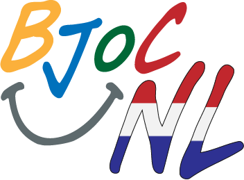

In deze cursus ga je programma's schrijven met behulp van de Snap-programmeertaal. Je zal een aantal van de meest belangrijke ideeën leren in de informatica, daarnaast zal je creatief moeten zijn en denk je na over de maatschappelijke gevolgen van informatica. 
Dit zijn de minimale specificaties voor het uitvoeren van Snap!